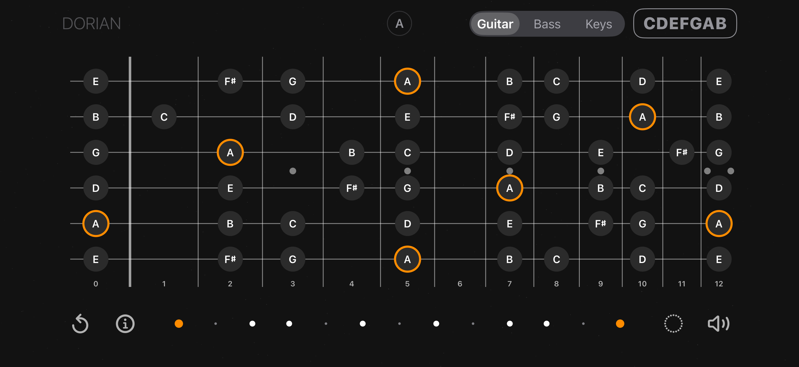
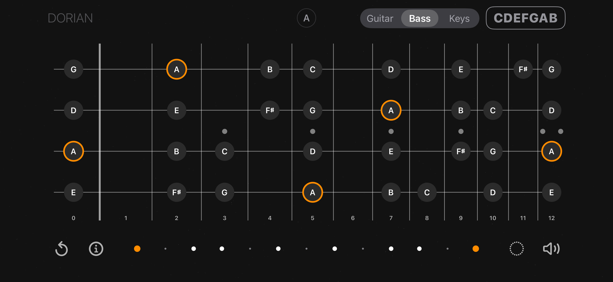
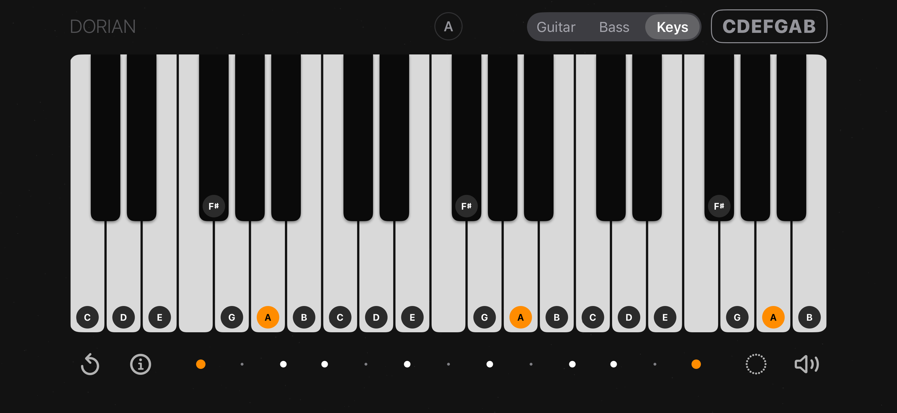
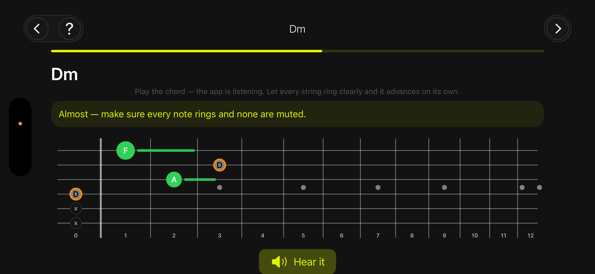
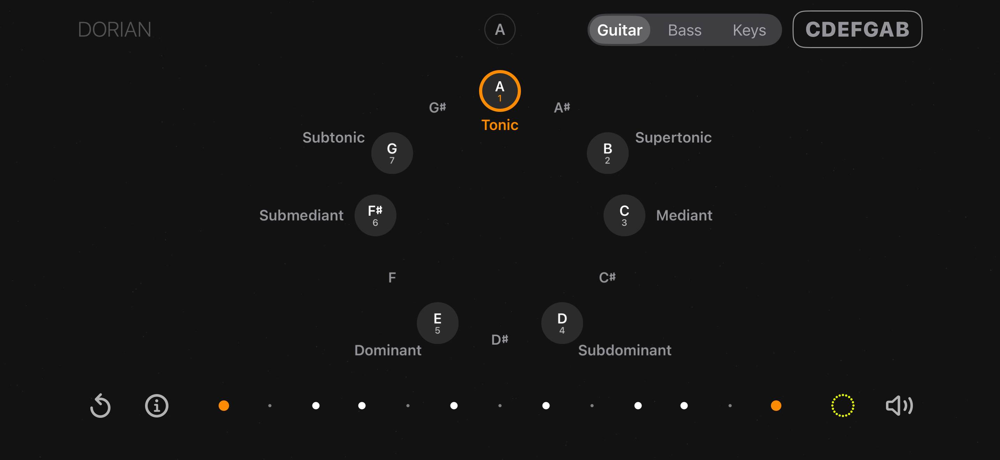
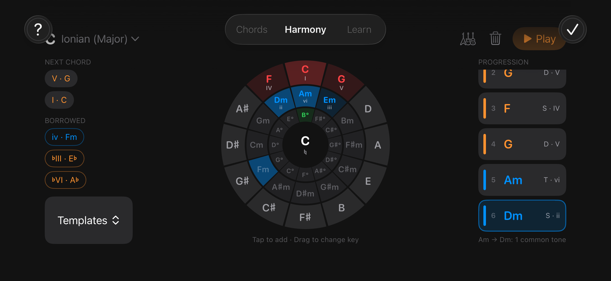
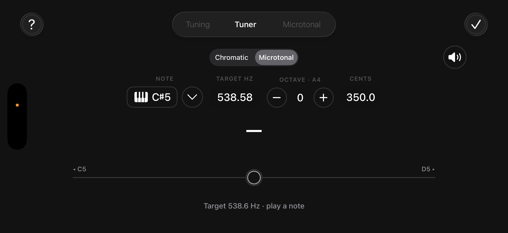

◎
Build any scale or mode
Tap notes straight onto the fretboard. Set the tonic, read intervals at a glance, and transpose the pattern to any key without losing its shape.
Guitar · Bass · Piano keys
Tap notes on the neck and CDEFGAB names the mode you just built and the chords hiding inside it. The same scale re-maps instantly to guitar, bass or piano keys — the theory stays, only the layout changes.
What it does
Everything works offline, with no account and no tracking.
Tap notes straight onto the fretboard. Set the tonic, read intervals at a glance, and transpose the pattern to any key without losing its shape.
Switch instruments and the same scale re-maps instantly. Relationships stay identical — only the layout under your fingers changes.
Not sure what you just played? Matching Scales lists every scale and mode containing your notes, with suggested tonics and closest matches.
In chord mode each note shows which chords it belongs to. Pick a chip to see the shape, drag it along the neck for other voicings, and hear it.
Chromatic and microtonal modes. Tune to any target note, hear its reference tone, and save custom string tunings for alternate setups.
A sequencer and metronome with accents, polyrhythms and polymeters, plus a tap trainer that grades how tightly you actually play.
One idea, three layouts
A mode isn’t three shapes to memorise — it’s one set of relationships. Here is the very same A Dorian, three times over.



The app listens
The chord course teaches shapes one at a time. Play the chord and the microphone listens: every note lights up green as it rings, and the lesson moves on by itself once the chord sounds clean.
Audio is analysed on your device in real time. Nothing is recorded, stored or sent anywhere.

Matching
Select the notes you like to play, and the app will find a scale that contains them, as well as chords and other structures associated with those notes, giving you more control over your improvisation right now.

In motion
Learn
A step-by-step path through chord shapes, with the microphone checking your sound and your chord changes.
Short theory lessons with quizzes — keys, function, cadences — tied back to the neck instead of a textbook.
Every chord, A to Z, with voicings you can drop straight onto the fretboard or the keyboard.


Privacy
No account. No analytics. No third-party SDKs. No network requests at all — the app simply doesn't talk to a server.